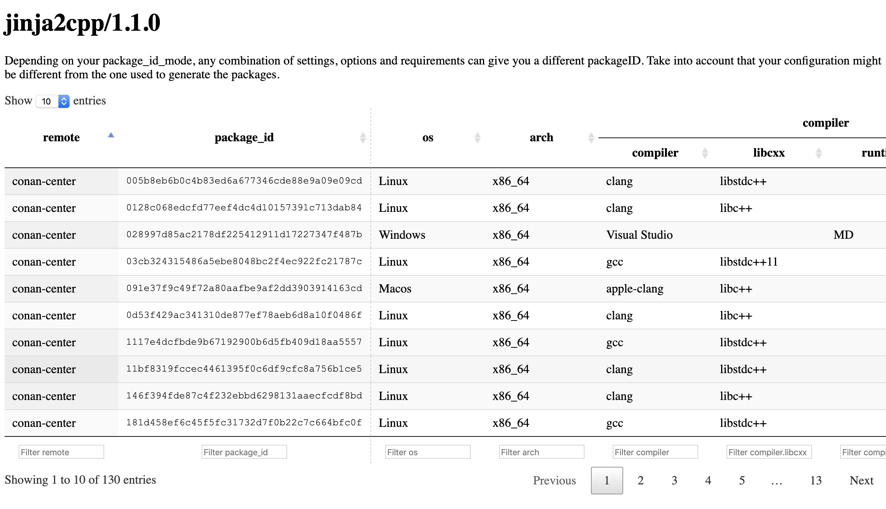

HTML output for conan search table¶
Warning
This has to be an considered as an experimental feature, we might change the context provided to this templates once we have more exmpales from the community.
The conan search command can generate an HTML table with the results of the query when looking for binaries
{kind=link}
This is the default Canan provides, but you can use your own Jinja2 documentation template to customize this output to your needs:
- <cache>/templates/output/search_table.html.
Context¶
Conan feeds this template with the information about the packages found, this information is called context and it contains these objects:
base_template_path: absolute path to the directory where the choosen template file is located. It is needed if your output file needs to link assets distributed together with the template file.search: it contains the pattern used in the command line to search packages.results: this object contains all the information retrieved from the remotes, it is used to get the headers and the rows.
When the output is a table, the first thing needed are the headers, these can be a sinle row
or two rows like the image above. In order to get the headers you should use
results.get_headers(keys) with a list of extra keys you want to include (see example below).
Conan will always return a header for all the different settings and options values, with this keys
list variable you can retrieve other information that might be useful in your table like remote,
reference, outdated or package_id.
Then you can use the returned object to get the actual headers:
single row headers: it just returns a list with all the headers, it is straightforward to use:
<thead> <tr> {%- set headers = results.get_headers(keys=['remote', 'package_id']) %} {%- for header in headers.row(n_rows=1) %} <th>{{ header }}</th> {%- endfor %} </tr> </thead>two-rows headers: it returns a list of tuples like the following one:
[('os', ['']), ('arch', ['']), ('compiler', ['', 'version', 'libcxx']),]The first element for this tuple is intended for the top row, while the second element lists all the subsettings in the top header category. An empty string means there is no category, like
compiler=Visual Studio.Composing the table headers in HTML requires some more code in the template:
<thead> {%- set headers = results.get_headers(keys=['remote', 'package_id']) %} {%- set headers2rows = headers.row(n_rows=2) %} <tr> {%- for category, subheaders in headers2rows %} <th rowspan="{% if subheaders|length == 1 and not subheaders[0] %}2{% else %}1{% endif %}" colspan="{{ subheaders|length }}"> {{ category }} </th> {%- endfor %} </tr> <tr> {%- for category, subheaders in headers2rows %} {%- if subheaders|length != 1 or subheaders[0] != '' %} {%- for subheader in subheaders %} <th>{{ subheader|default(category, true) }}</th> {%- endfor %} {%- endif %} {%- endfor %} </tr> </thead>
Once the headers are done, iterating the rows is easy. You should use results.packages()
to get an iterable with the list of results and then, for each of the rows, the fields.
You need to provide the headers to retrieve the fields you need in the proper order
according to the table headers:
<tbody>
{%- for package in results.packages() %}
<tr>
{%- for item in package.row(headers) %}
<td>{{ item if item != None else ''}}</td>
{%- endfor %}
</tr>
{%- endfor %}
</tbody>
Additionally, the package object in the snippet above that represents one of the query results
contain some fields that can be useful to compose the text for an alt field in the HTML:
remotereferenceorrecipepackage_idoutdated